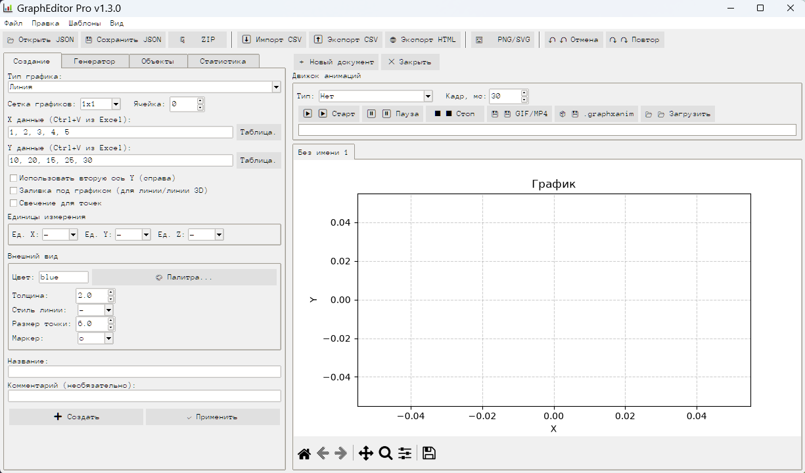

30+ типов графиков · 15 анимаций · 17 тем · 16 языков · экспорт в PNG, PDF, HTML, Excel, GIF и MP4
⬇ Скачать для Windows Исходный кодЛиния, столбчатая, гистограмма, точечная, круговая, heatmap, contour, 3D-поверхность, водопад, гант, триангуляция и другие.
Волна, маятник, Лоренц-аттрактор, двойной маятник, эпициклоид, частицы, клеточный автомат. Экспорт в GIF и MP4.
Статистика, аппроксимации (линейная, полиномиальная, экспоненциальная), поиск пиков, линии тренда.
Светлая, тёмная, Dracula, Nord, Monokai, Catppuccin и другие. Своя тема в один клик.
Русский, английский, немецкий, китайский, арабский, хинди и ещё 11 языков с автоподбором шрифта.
Вкладки документов, Undo/Redo, перетаскивание точек, crosshair, автосохранение, Python-консоль.

GraphEditorPro-Setup.exe.